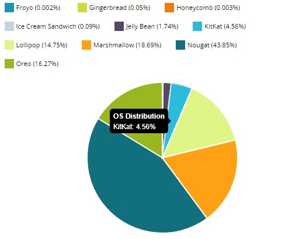
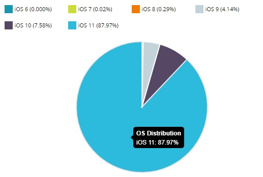

Construct 2 - Trabalhando com Cordova CLI

Após o encerramento do serviço de criação de APK pelo Intel XDK,
muitas pessoas tiveram sérios problemas com seus projetos, já que o Intel XDK era considerado por muitos o que fornecia o melhor serviço, Cocoon
da empresa Ludei, fornece também um excelente serviço "geração de APK", porém com a obrigatoriedade da splash da empresa no início do aplicativo, sendo necessário pagar uma taxa de $500(quinhentos dólares americanos) para remover, limite de 2 projetos por conta,
e alguns detalhes técnicos que me fez perter qualquer afinidade com o serviço. Existe ainda uma terceira opção, Phonegap Build, feito pela Adobe, porém
é considerado por muitos como a pior opção, já que não tem praticamente nenhuma opção de customizaçao, serviço para adicionar plugins.
Olhando todas as opções, ficava pensando que seria o ideal ter uma opção que eu possa fazer tudo pelo meu próprio computador, sem ficar refém de sites, então descubro o Cordova CLI.
Primeiro vamos entender o que é o Cordova
O Cordova permite criar aplicações híbridas para diferentes plataformas mobile "Android e IOS" com base no componente WebView. Este funciona como um browser, mas sem aquela barra de endereço ou botões para o usuário. Por ele apenas visualizamos os dados. O Cordova usa apenas HTML, CSS e JavaScript, então o desenvolvedor web que já utiliza essas linguagens pode aproveitar todo o conhecimento e alcançar novos públicos, pois suas aplicações usarão recursos nativos dos dispositivos mobile. Cordova CLI "Command-line-interface", literalmente significa Interface de Linha de Comandos. A criação de APK e a geração do projero Xcode, gerenciamento de plugins, até testes são feitos por linhas de comando. Quando queremos adicionar um plugin por exemplo, basta apenas digitar 1 linha de comando, que o próprio cordova faz a conexão com o servidor que geralmente é o "Github", via Node.js instalando no seu projeto.
O Cordova CLI parece ser bem interessante, como faço para instalar no meu Computador?
Antes de querer usar o Cordova CLI, é necessário preparar o computador instalando algumas ferramentas como Node.js, Android Studio, Gradle entre outros, para não ficar um artigo gigantesco, prefiro indicar um canal de um amigo do Canal Perametade Games que abordou a preparação do ambiente de desenvolvimento Windows.
Clique no botão Android para mostrar a preparação do ambiente no Windows
Infelizmente não encontrei um material em português para a preparação do ambiente IOS, futuramente pretendo criar este material.
Para IOS é necessário ter uma conta de desenvolvedor da Apple, para maiors detalhes, veja neste link Como se tornar um desenvolvedor iOS
Clique em IOS para mostrar a preparação do ambiente no MAC
NodeJS
Para instalar o NodeJS é necessário fazer o download pelo Site oficial NodeJs, escolhendo a versão do seu sistema operacional.
Após instalar caso queira atualizar o NodeJs, use o comando.
npm update npm -g
Instalei tudo que precisa e está tudo funcionando, e agora?
O seu ambiente não estiver corretamente configurado para continuar. A exportação do Construct2 das versões r244+ foi modificada para também suportar o Cordova CLI.

Cordova Options
É bem necessário ficar atento nestas opções. Hide Status Bar vai adicionar o plugin com o mesmo nome. Use WkwebView é exclusivo de IOS e ajuda a acelerar a aplicação, caso o aplicativo seja apenas para Android, pode desmarcar esta opção. As outras 2 pode deixar desmarcadas, pois é referente ao Intel XDK, que não utilizaremos. Em Permissions, é necessário deixar marcado a opção "Uses Media", ela vai adicionar o plugin "Media" no projeto, que serve para executar os sons. Export audio files for No Construct2 quando adicionamos um arquivo de audio, é criado 2 arquivos com o mesmo nome, navegadores em geral utilizam o formato .ogg, porém nas plataformas da Apple, eles utilizam o .m4a, se o projeto for apenas para Android, pode desmarcar a opção para IOS. Minimum supported OSs Android Eu costumo utilizar as versões recomendadas, pois dependendo do aparelho principalmente android antigos, o desempenho pode ser horrível, sendo assim, deixo 5.0+, que abrengue mais de mais de 80% de todos os dispositivos android no mundo, em 2017 agora maio de 2018, está com mais de 90% do mercado segundo o Apteligent, sendo assim é fácil considerar suportar do Android 5.0+, como estamos falando de games, restringir aparelhos antigos não é uma escolha ruim.
IOS Eu deixo também a versão 9.0+, sendo que a versão mais atual é 11, também levando em conta que 52% dos aparelhos com iOS já utilizam a versão 11 do sistema operacional, não tem muito sentido suportar versões muito antigas do IOS. Dados de Maio de 2018, segundo o site Apteligent
Preparando o ambiente
Agora que entendemos o que é Cordova CLI e para que serve cada opção de exportação do Construct2, precisamos de fato criar o APK "Android" e o projeto de Xcode para "IOS".
Com o ambiente configurado, aprenda a gerar o projeto Xcode para IOS
Como não poderia ser diferente, aprenda gerar o APK pelo Cordova, além do processo de assinar o aplicativo é igualmente simples.